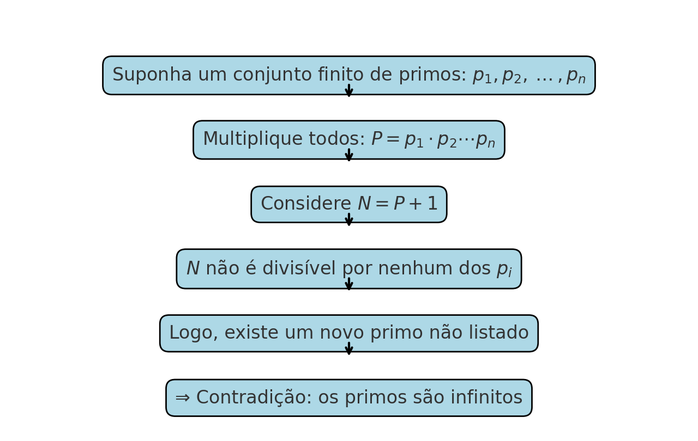
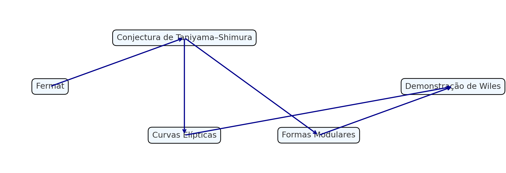

📘 🧮 Beauty is the First Test — G. H. Hardy and Mathematics as Art
← Back to the Mathematics Reading Guide 🧭 🧮
← Back to the Mathematics Section 🧮
1 📘 🧮 Beauty is the First Test — G. H. Hardy and Mathematics as Art
“Beauty is the first test: there is no permanent place in the world for ugly mathematics.” — G. H. Hardy, in A Mathematician’s Apology

Godfrey Harold Hardy (1877–1947) was one of the greatest British mathematicians of the early 20th century. He studied at Trinity College, Cambridge, becoming a fellow in 1900, and contributed significantly to number theory and mathematical analysis.
Hardy is remembered for his historic collaboration with John E. Littlewood and for being the mentor of Srinivasa Ramanujan. His most famous work, A Mathematician’s Apology (1940), justifies pure mathematics as a creative act — a passionate defense of “beauty before utility.”
He received important distinctions such as the Royal Medal (1920), the De Morgan Medal (1929), and the Copley Medal (1947).
1.1 Aesthetics in Pure Mathematics
In pure mathematics, the pursuit is not utilitarian, but rather conceptual, structural, abstract. The mathematician asks: is this coherent? profound? inevitable? beautiful?
Beauty, in this context, manifests in several ways: - Unexpected simplicity - Elegant generality - Surprising connections - Inevitable proofs
1.2 Classical Examples of Mathematical Beauty
1.2.1 Euclid’s Proof of the Infinitude of Primes
\[ \text{Suppose there are only } p_1, p_2, \dots, p_n. \] \[ \text{Consider } N = p_1 p_2 \dots p_n + 1. \]
This number \(N\) is not divisible by any of the \(p_i\), leading to a new prime. No excess. Just beauty.
Euclid’s proof can be represented visually: finite primes → multiply → add 1 → a new prime emerges.

1.2.2 Euler’s Identity
\[ \boxed{e^{i\pi} + 1 = 0} \]
Five fundamental constants — \(e\), \(i\), \(\pi\), \(1\), \(0\) — in one equation.
1.2.2.1 Euler’s Formula
\[ e^{ix} = \cos(x) + i \sin(x) \]
1.2.3 7. Teorema de Fermat (Wiles)
```markdown ### Wiles’ Proof of Fermat’s Last Theorem
No positive integers \(x,y,z\) satisfy \(x^n+y^n=z^n\) for \(n>2\).
Wiles’ proof is beautiful because it unifies elliptic curves and modular forms.

The diagram summarizes how Wiles linked elliptic curves and modular forms to solve Fermat’s problem.
- 1637 Fermat states it.
- 1980s Link to Taniyama–Shimura Conjecture.
- 1993 Wiles announces proof.
- 1994 Flaw corrected.
- 1995 Proof accepted.
1.3 Beauty as a Filter
Hardy’s phrase critiques mathematics without refinement. Over time, only the essential survives — and it is almost always beautiful.
1.4 Hardy’s Words
“Pure mathematics is a creative art…”
1.5 ✍️ Personal Comment
Reflection on relativity, four-velocity, spacetime curvature, and the unifying beauty of mathematics.
1.6 Conclusion
The mathematics that survives is that which inspires. Beauty is not an ornament — it is the criterion of permanence.
2 📚 References and Further Reading
← Back to the Mathematics Reading Guide 🧭 🧮 ← Back to the Mathematics Section 🧮
Blog do Marcellini — Exploring Mathematics with Rigor and Beauty.
Created by Blog do Marcellini with ❤️ and code.